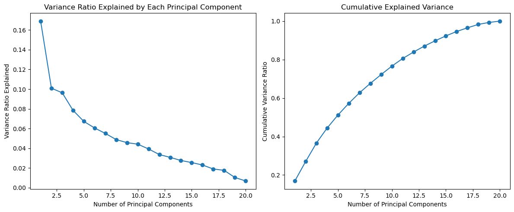
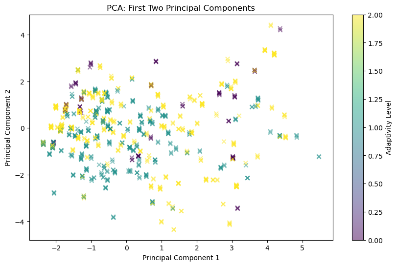
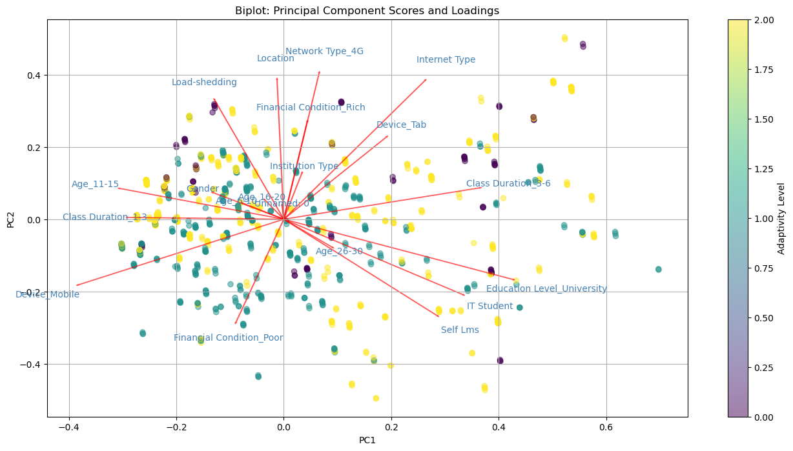
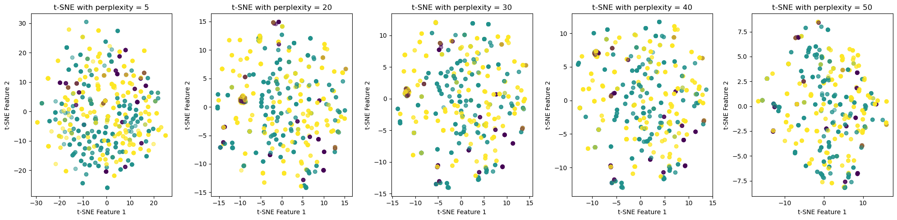
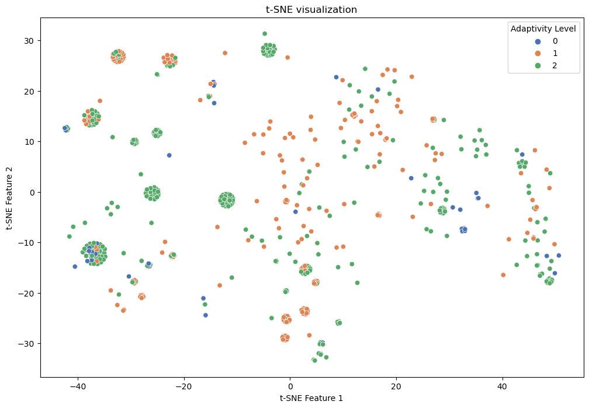

Dimensionality Reduction
Project Proposal
Objectives: The objective of this project is to explore and demonstrate the effectiveness of Principal Component Analysis (PCA) and t-Distributed Stochastic Neighbor Embedding (t-SNE) in reducing the dimensionality of complex, multimodal data while preserving essential information and enhancing data visualization. This study aims to provide a deeper understanding of these techniques in handling and visualizing high-dimensional datasets, offering insights into their practical applications and effectiveness.
Dataset Selection: The dataset chosen for this project is “Students’ Adaptability to Online Learning Environments.” It encompasses a variety of attributes, such as gender, institution type, IT student status, location, load-shedding, internet type, LMS usage, age groups, education level, financial condition, network type, class duration, device type, and adaptivity level. You can find the raw data and also the modified data In the previous section, we applied One-Hot Encoding to transform our dataset, which was entirely categorical, into a numeric format. Therefore, we will use the modified dataset for this project.
Tools and Libraries: The project will employ Python due to its extensive support for data analysis and visualization. Key libraries include: Pandas;NumPy;Scikit-learn;Matplotlib;Seaborn.
Code Implementation
- You can find all the python codes here
Project Report
Dimensionality Reduction with PCA:
Preprocess: PCA is sensitive to the scale of the features and features with larger scales can disproportionately influence the result, leading to misleading principal components. Therefore, we use StandardScaler from scikit-learn to standardize our data first. Standardizing ensures that each feature contributes equally to the result, making the PCA more reliable and interpretable.
Optimal number of principal components: We will use a scree plot and cumulative explained variance ratio to identify the optimal number of principal components that capture most of the variance in the data. A scree plot is a simple line segment plot that is commonly used in Principal Component Analysis (PCA) to help determine the number of principal components to retain.

To determine the optimal number of principal components, we typically search for a leveling-off point on the cumulative explained variance plot. This point suggests that additional components contribute little to explaining the dataset’s variance. Aiming to maintain a significant proportion of the variance, such as 95%, we can identify the required number of principal components. In your dataset, this approach indicates that 17 principal components are needed to retain at least 95% of the total variance. By reducing the dataset to these 17 dimensions, we effectively preserve most of the original data’s information, striking a balance between lowering dimensionality and maintaining key data characteristics.
- Visualize the reduced-dimensional space:
The visualization below represents our data projected onto the first two principal components (PC1 and PC2) after reducing the dataset to 17 dimensions using PCA.
The PCA plot displays data distribution along the first two principal components. The visible, albeit not sharp, groupings suggest a somewhat overlapping distribution of adaptivity levels in these dimensions. This overlap implies that PC1 and PC2 alone might not distinctly separate adaptivity levels, hinting at the importance of the other components for capturing finer details. Regarding the color scale, while some color concentration in certain areas could signal distinct adaptivity level characteristics, the mixed color distribution in this plot points to a complex interaction between features and adaptivity levels, potentially necessitating more dimensions for clearer differentiation.

Biplot is used in principal component analysis (PCA) to visualize both the principal component scores and the principal component loadings.
In the biplot, each vector corresponds to a dataset feature, with longer vectors indicating a stronger influence on the principal components’ variability. Vectors in similar directions suggest positive correlations between features, while opposite directions imply negative correlations.
For instance, the vectors for ‘Institution Type’ and ‘Internet Type’ are nearly orthogonal, suggesting these features independently contribute to the dataset’s variance. Conversely, ‘Load-shedding’ and ‘Class Duration’ vectors point in similar directions, indicating a positive correlation, possibly implying that load-shedding impacts class duration.

Dimensionality Reduction with t-SNE:
Preprocess: Just like what we do for PCA, we should standardize our data first.
Explore different perplexity values:
With a perplexity of 5, the data points are scattered too uniformly, suggesting it’s too low to discern any meaningful clusters, as it might capture more noise than structure. A perplexity of 20 shows emerging clusters with reduced overlap, yet the data structure isn’t entirely clear. At 30, clusters become more distinct, indicating a better capture of data structure with increased perplexity. Perplexity at 40 reveals even clearer, well-separated clusters, hinting it might be near optimal for the dataset. However, at 50, while clusters remain distinct, they are less defined compared to 40, suggesting that this value may be slightly too high as it begins to merge different groups. Therefore, a perplexity value between 30 and 40 might be appropriate for our dataset.

Visualization of the t-SNE output
The t-SNE visualization indicates distinct groupings corresponding to various adaptivity levels—high, medium, and low. The algorithm seems to be successful in delineating these groups, particularly distinguishing the high adaptivity level with notable clarity. Yet, the transition between low and medium adaptivity levels is less defined, with some overlap present, suggesting a more nuanced or complex relationship between these categories. Outlying data points stand apart from the primary clusters, potentially representing atypical cases or unique data profiles within the broader dataset.

Evaluation and Comparison:
Preserving data structure and information: PCA is a linear method that focuses on keeping significant data features by maximizing variance and projecting data onto high-variance axes, but it might miss complex, nonlinear data relationships. In contrast, t-SNE, a nonlinear technique, excels in highlighting local structures and clusters by unfolding complex patterns, though it may not maintain the overall data structure as effectively as PCA.
Visualization Capabilities: PCA is adept at capturing the most significant variance in high-dimensional data, projecting it to lower dimensions to visualize overarching patterns and global relationships efficiently. Conversely, t-SNE excels at delineating local clusters and complex structures, presenting a detailed picture of data relationships on a smaller scale that PCA may overlook due to its linear approach. While PCA gives a broad overview with computational ease, t-SNE digs deeper into the data’s fine details, demanding more computational resources.
Discussion of the trade-offs: PCA is optimal for quick, high-level data structure analysis and when feature contribution is crucial, as it efficiently handles large datasets and retains global relationships. In contrast, t-SNE is superior for uncovering detailed local groupings and nonlinear patterns in smaller datasets, but it’s computationally heavier and less interpretable. Essentially, PCA is best for dimensionality reduction and overview insights, while t-SNE excels in cluster visualization and data exploration.
Note: Documentation is facilitated by ChatGpt